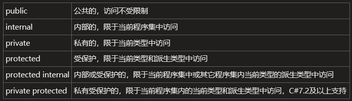
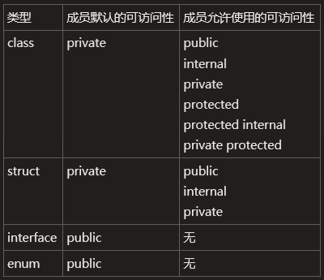

一、抽象和封装是面向对象编程的基础特性，抽象用来忽略细节，在不同的层次上处理细节，封装则实现了对细节的不同程度的访问权限；即抽象允许相关信息可视化，封装用来实现所需级别的抽象；
1.根据封装的原则，命名空间可以指定其中每个类型对外部代码的可访问性，类和结构可以指定其中每个成员对外部代码的可访问性，可访问性可以控制是否可以从当前程序集或其它程序集的代码中访问它们，以防止编码错误和恶意攻击发生的可能性；
二、在C#中可以通过4种访问修饰符（Access Modifier）和2种组合访问修饰符来设置元素的可访问性：

1.命名空间默认即为public，没有任何访问限制，不能使用任何访问修饰符；
2.在命名空间中的定义的五种基本类型（类class、结构struct、接口interface、枚举enum和委托delegate），只能是public或internal的，默认为internal的；
※派生类的可访问性不允许高于基类的可访问性；
3.在不同类型的内部声明成员时，仅允许指定某些特定的访问性或不允许指定任何访问性，如果未在成员声明中指定访问修饰符，则将使用默认的可访问性：

※特殊的，委托类型不包含任何自定义成员；静态构造函数、析构函数不能包含任何访问修饰符；
※通常情况下，成员的可访问性不高于声明该成员的类型的可访问性，但是，如果内部类中的公共成员实现了接口方法或重写了公共基类中定义的虚方法、抽象方法，则可从其它程序集内访问到该成员；
※字段、属性和事件的类型的可访问性不得低于该成员的可访问性，方法、索引器和委托的返回值及参数的类型的可访问性不得低于该成员的可访问性；这些操作会导致编译器错误：
1 class MyClass { }
2 public class MyPublicClass
3 {
4 public MyClass MyField; //CS0052
5 public void MyFunc(MyClass obj) //CS0051
6 {
7 //do…
8 }
9 public MyClass MyFunc() //CS0050
10 {
11 return new MyClass();
12 }
13 }
如果您觉得阅读本文对您有帮助，请点一下“推荐”按钮，您的认可是我写作的最大动力！
作者：Minotauros
出处：https://www.cnblogs.com/minotauros/
本文版权归作者和博客园共有，欢迎转载，但未经作者同意必须保留此段声明，且在文章页面明显位置给出原文连接，否则保留追究法律责任的权利。